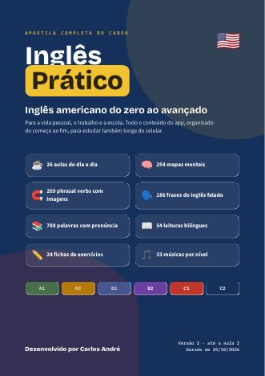

Seu navegador não liberou a voz em inglês. No Android, abra Configurações, Idiomas, Saída de texto em voz, e instale o inglês (Estados Unidos).
Inglês
Prático
Para a vida pessoal, o trabalho e a escola. Escolha por onde começar.
Comece do zero
Como um bebê aprendendo a falar: ouça, repita e toque na figura. Cada lição tem só 5 palavras e leva uns 3 minutos. Uma por dia já faz diferença.
Desafios
Teste o que você aprendeu, bata seus recordes e colecione conquistas. Cada desafio vale pontos ⭐ e conta para a sua sequência de dias 🔥.
🏅 Conquistas
🎧 Áudios do dia a dia
Conversas e histórias reais dos Estados Unidos, de 5 a 10 minutos, com voz natural. Coloque o fone e escute no ônibus, na caminhada ou no almoço. Não precisa entender tudo: o ouvido vai se acostumando.
Uma situação por vez
Escolha onde vai usar: vida pessoal, trabalho ou escola. Cada aula mostra o nível, do 1 (mais simples) ao 4. Ouça, repita três vezes e avance quando quiser.
Sugestão para uma sessão (use o tempo que quiser)
- 5 min: revisão da aula anterior (toque na aba dela acima e ouça de novo).
- 10 min: ouça cada frase, repita em voz alta, grave no WhatsApp e compare.
- 10 min: abra o mapa e as palavras do dia; leia a história em voz alta.
- 5 min: monte a cena sozinho, como se estivesse no balcão nos EUA.
Cada celular guarda o próprio progresso, então o mesmo link serve para qualquer pessoa. Errou a pronúncia? Sem problema. Ouça de novo na velocidade "Bem devagar" e repita junto.
Tradutor de voz
Fale uma frase e o app traduz e fala na hora. Funciona nos dois sentidos: português para inglês e inglês para português. Precisa de internet.
Últimas traduções
Se o microfone não funcionar, permita o uso do microfone para o site (toque no cadeado ao lado do endereço) e use o Chrome no Android ou o Safari no iPhone. As frases que já estão no app aparecem com a pronúncia; as outras são traduzidas pela internet (serviço gratuito MyMemory).
Exercícios de fixação
Flashcards: escrito x falado
Apostila completa em PDF
Todo o conteúdo do app numa apostila formatada para imprimir e estudar também sem o celular: 276 páginas numeradas, do começo ao fim, com sumário, exercícios para escrever, gabarito e páginas para anotações.

- 📄 Papel A4, orientação retrato
- 🔁 Frente e verso, virando pela borda longa
- 💯 Escala tamanho real (100%), sem “ajustar à página”
- 📎 A margem de dentro é maior, para furar, grampear ou encadernar em espiral
- ⬜ Cada parte começa numa página da direita, por isso algumas páginas ficam em branco de propósito
Se a impressora não faz frente e verso sozinha, imprima primeiro as páginas ímpares, vire o papel e imprima as pares. Também dá para imprimir só uma parte: veja as páginas no sumário abaixo.
O que tem na apostila
- 🧭 Antes de começarpág. 5
- ☕ Parte 01 · Uma situação por vezpág. 9
- 🪜 Parte 02 · Do zero ao avançadopág. 17
- 📘 Parte 03 · Junto com o livropág. 27
- 🧠 Parte 04 · Mapas mentaispág. 39
- 🧲 Parte 05 · Phrasal verbs com imagenspág. 159
- 🗣️ Parte 06 · Escrito x Faladopág. 177
- 💬 Parte 07 · Frases e fala nativapág. 187
- 📚 Parte 08 · Vocabuláriopág. 197
- 📖 Parte 09 · Leitura bilínguepág. 209
- 🎵 Parte 10 · Inglês com músicaspág. 229
- 🆘 Parte 11 · SOS Inglêspág. 233
- ✏️ Parte 12 · Exercícios de fixaçãopág. 237
- 🗺️ Parte 13 · Trilha livre de estudopág. 263
- ✅ Gabarito das fichaspág. 267
- ✍️ Minhas anotaçõespág. 269
A apostila acompanha a versão do app (Versão 2 · até a aula 2 · gerada em 25/10/2026). Quando o app ganhar conteúdo novo, ela também é atualizada.
Do zero ao avançado
Seis degraus, do A1 ao C2, a mesma escala usada em escolas e provas de inglês no mundo todo. Suba um degrau por vez: toque no nível, ouça as frases e marque o que já sabe.
Os níveis A1 e A2 combinam com o Interchange Intro das aulas com a professora. Os próximos degraus preparam o que vem depois.
Junto com o livro
Segue o Interchange Intro (4ª edição), o livro das aulas com a professora. Primeiro vem o que foi visto em cada aula, para revisar com áudio. Depois vêm as 16 unidades do livro, com as páginas e frases extras para treinar o mesmo tema. Os textos, exercícios e áudios do livro continuam no próprio livro.
Minhas aulas com a professora
Unidades do livro
Rotina da professora
As dicas do caderno, transformadas em tarefas para marcar.
1. Música: um cantor por mês
Escolha um cantor que canta em inglês. Duas músicas por semana, de manhã e à tarde, somando 8 músicas no mês. Ouça com a letra aberta no Spotify ou no YouTube.
Prefira cantores americanos, porque o foco é o inglês americano. A Adele, por exemplo, é inglesa, então o sotaque dela é diferente do americano.
2. Série e filme: foco no idioma
Não assista para acompanhar a história. Escolha um trecho de 5 a 10 minutos e repita o mesmo trecho em três passos.
3. Celular em inglês
Mude o idioma do celular e do Waze para inglês. Assim você aprende sem perceber, várias vezes por dia.
No Android, o caminho é Configurações, Sistema, Idiomas, English (United States). No Waze, toque em Configurações, Voz e idioma, e escolha English (US).
Mapas mentais
254 mapas do iniciante (A1) ao avançado (C2), com situações do dia a dia e gramática. Os 223 mapas completos são ilustrados e têm 5 partes: conceito, regra, exemplos com tradução, erro comum de brasileiros e dica visual. Os mapas rápidos são para revisar em um minuto.
Palavras do dia a dia
As palavras que mais aparecem nas conversas comuns nos EUA.
Toque em qualquer linha para ouvir. A pronúncia escrita é aproximada; o áudio é a referência.
Frases e fala nativa
Do nível 1 ao 4. Mais palavras não deixam você com cara de nativo. O que faz isso é juntar as palavras, ter respostas prontas e usar as expressões certas. Toque numa linha para ouvir.
Leitura bilíngue
54 leituras com áudio: histórias das aulas, conversas reais nos EUA, fábulas e clássicos da literatura adaptados, sempre com o inglês e o português lado a lado. Filtre pelo seu nível. Toque no alto-falante para ouvir cada frase.
Inglês com músicas
33 músicas separadas por nível. Antes de ouvir, leia o tema e treine as palavras. Depois, ouça com a letra aberta no YouTube ou no Spotify e marque quando terminar.
As letras não estão no app porque têm direitos autorais. O botão abre a música no YouTube.
🎧 Minhas músicas
Escolha a música que você gosta. Ela fica guardada no app para ouvir devagar, repetir trechos e entender a letra linha por linha.
O app não baixa músicas da internet, porque elas têm direitos autorais. Use um arquivo que você já tem no celular, ou guarde o nome e abra no YouTube ou no Spotify. As músicas ficam salvas só neste celular.
Phrasal verbs com imagens
SOS Inglês
Seu guia de emergências. Toque numa linha para ouvir a frase.
Trilha livre
Sem prazo e sem ordem obrigatória. Toque no botão azul do tema para abrir a aula, repita quantas vezes quiser e marque o quadrinho quando se sentir seguro.